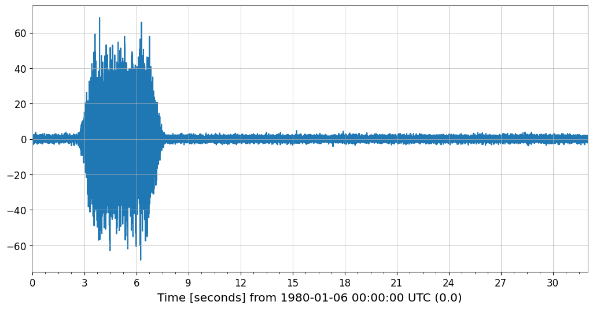
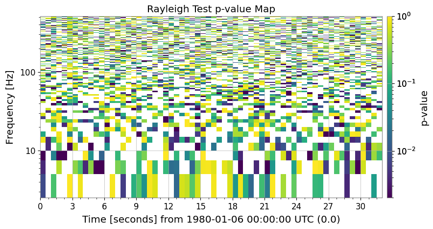
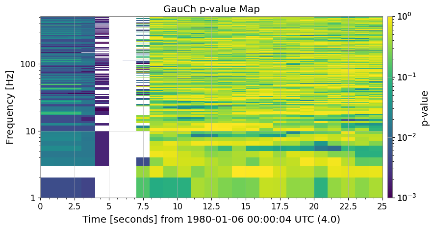
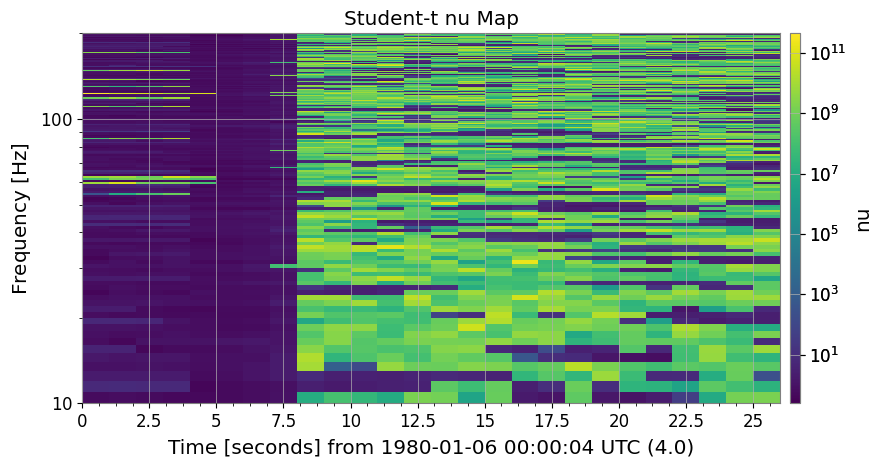
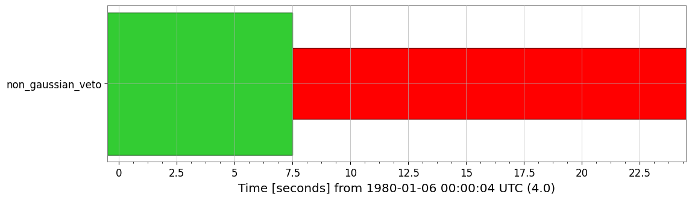
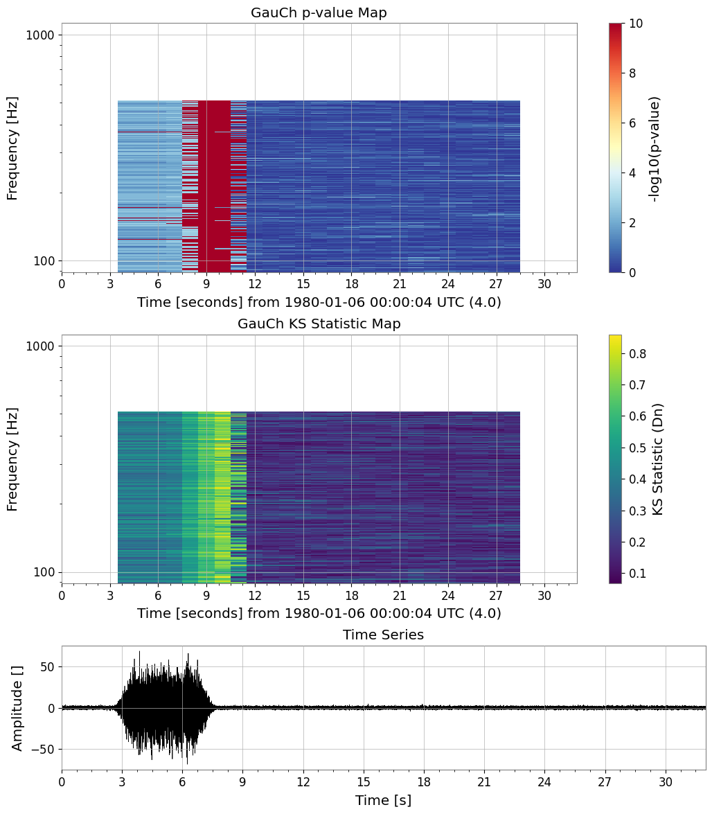

Note
このページは Jupyter Notebook から生成されました。 ノートブックをダウンロード (.ipynb)
[1]:
# Skipped in CI: Colab/bootstrap dependency install cell.
非ガウス雑音解析: Rayleigh と Gaussian-Chi
This tutorial demonstrates the implementation of a comprehensive non-Gaussian noise analysis toolkit in GWexpy, based on research by Yamamura (2024) and Yamamoto (2015-2016).
Contents
Noise Simulation: Generating non-stationary and scattered light noise.
Rayleigh Statistics: Testing deviations from Rayleigh distribution.
GauCh (Modified KS Test): Advanced non-Gaussianity detection.
Student-t Indicator: Measuring distribution tail thickness.
Data Quality Flags: Generating veto segments automatically.
Evaluation & Visualization: ROC curves and composite dashboards.
[2]:
import warnings
warnings.filterwarnings("ignore", category=UserWarning)
warnings.filterwarnings("ignore", category=DeprecationWarning)
import matplotlib.pyplot as plt
from gwexpy.noise import scatter_light_noise, transient_gaussian_noise
from gwexpy.plot.gauch_dashboard import plot_gauch_dashboard
from gwexpy.statistics import to_segments
1. Noise Simulation
We simulate two types of non-Gaussian noise models used in KAGRA characterization.
Model I: Transient Gaussian noise (glitches).
Model II: Scattered light noise (stationary non-Gaussianity).
[3]:
duration = 32.0
fs = 1024.0
# Model I: Glitch injection
ts_glitch = transient_gaussian_noise(duration, fs, A1=20.0, name='Glitchy Data')
# Model II: Scattered light
ts_scatter = scatter_light_noise(duration, fs, A2=1e-12, name='Scattered Light')
ts_glitch.plot()
[3]:


2. Rayleigh Spectrogram
The Rayleigh statistic \(R\) measures the consistency of the ASD distribution with a Rayleigh distribution. We use the rayleigh_test method to get a p-value map.
[4]:
rs_p = ts_glitch.rayleigh_test(fftlength=0.4, stride=0.5, overlap=0.2, n_samples=20)
rs_p.plot(yscale='log', title='Rayleigh Test p-value Map')
plt.colorbar(next((c for c in plt.gca().get_children() if hasattr(c, 'get_clim')), None), label='p-value')
[4]:
<matplotlib.colorbar.Colorbar at 0x7f92b07f4110>

3. GauCh (Modified KS Test)
GauCh is a more sensitive test for non-Gaussianity using a modified Kolmogorov-Smirnov test.
[5]:
gauch_res = ts_glitch.gauch(fftlength=1.0, window=8)
gauch_res.pvalue_map.plot(yscale='log', title='GauCh p-value Map')
plt.colorbar(next((c for c in plt.gca().get_children() if hasattr(c, 'get_clim')), None), label='p-value')
[5]:
<matplotlib.colorbar.Colorbar at 0x7f92b032b010>

4. Student-t Indicator
The Student-t indicator fits a Student-t distribution to FFT components and outputs the degree of freedom \(\nu\).
[6]:
nu_spec = ts_glitch.student_t_spectrogram(fftlength=1.0, window=8, frange=(10, 200))
nu_spec.plot(yscale='log', title='Student-t nu Map')
plt.colorbar(next((c for c in plt.gca().get_children() if hasattr(c, 'get_clim')), None), label='nu')
[6]:
<matplotlib.colorbar.Colorbar at 0x7f92ad216c50>

5. Data Quality Flags
We can automatically generate veto segments where the p-value is below a threshold.
[7]:
dq_flag = to_segments(gauch_res.pvalue_map, alpha=0.001)
print(dq_flag)
dq_flag.plot()
<DataQualityFlag('non_gaussian_veto',
known=[[3.5 ... 28.5)]
active=[[3.5 ... 11.5)]
description='None')>
[7]:


6. Composite Dashboard
Finally, we can visualize everything in a single dashboard.
[8]:
fig = plot_gauch_dashboard(ts_glitch, gauch_res)
plt.show()
